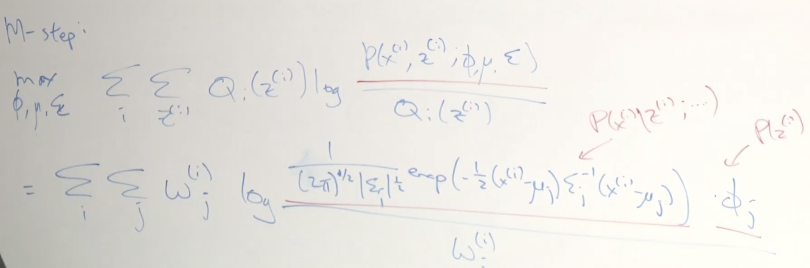
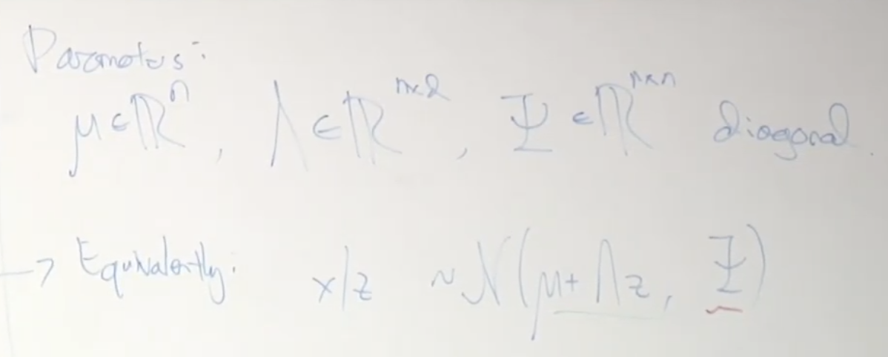
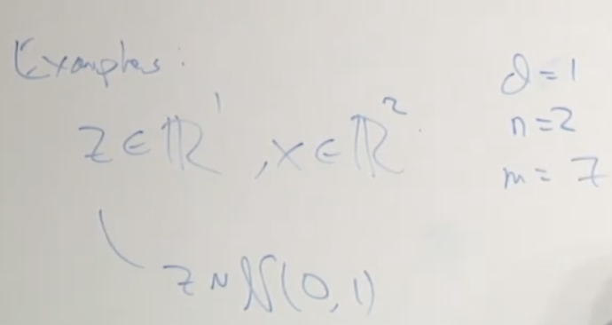
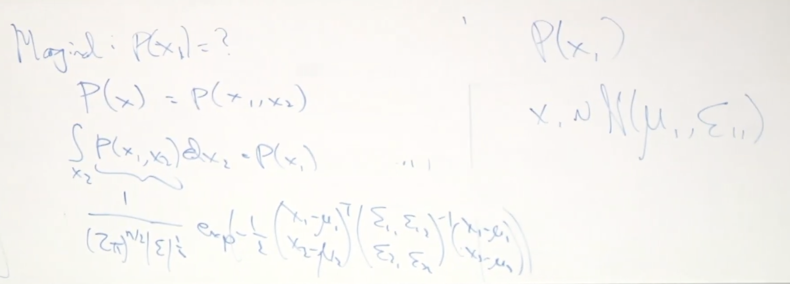

Lec 15-EM Algo-Factor Analysis
Contents
Lec 15-EM Algo-Factor Analysis#
Outline#
EM Convergence
Gaussian properties
Factor Analysis
Gaussian marginals and
EM steps
Recap EM algorithm#
E-step#
\(w_{j}^{(i)} = Q_{i}(z^{(i)}) = p(z^{(i)}|x^{(i)}; \theta)\)
M-step#
\(\theta = \text{arg}\max\limits_{\theta}\sum\limits_{i}\sum\limits_{z^{(i)}}Q_{i}(z^{(i)})\log\frac{p(x^{(i)},z^{(i)}; \theta)}{Q_{i}(z^{(i)})}\)
Mixture of Gaussian Models#
Suppose there is a latent(hidden/unobserved) random variable z; and \(x^{(i)}, z^{(i)}\) are modeled as a joint distribution
\(p(x^{(i)}, z^{(i)}) = p(x^{(i)}|z^{(i)})p(z^{(i)})\), where \(z \in \{1,2,..,k\}\)
where \(z^{(i)} \sim \) Multinomial(\(\phi\)) \(\Rightarrow p(z^{(i)}=j) = \phi_{j}\) and \(x^{(i)}|z^{(i)} = j \sim N(\mu_{j}, \Sigma_{j})\)
E-step - implementation#
\(w_{j}^{(i)}\) is the strength with which \(x^{(i)}\) is assigned to Gaussian j
\(w_{j}^{(i)} = Q:(z^{(i)}=j) = p(z^{(i)}|x^{(i)}; \phi, \mu, \Sigma)\)
where \(Q:(z^{(i)}=j) \equiv p(z^{(i)}=j)\)
M-step - implementation#
 $\tiny{\text{YouTube-Stanford-CS229-Andrew Ng}}$\(\max\limits_{\phi, \mu, \Sigma} \sum\limits_{i}\sum\limits_{z^{(i)}}Q_{i}(z^{(i)})\log\frac{p(x^{(i)},z^{(i)}; \phi, \mu, \Sigma)}{Q_{i}(z^{(i)})}\) \( = \sum\limits_{i}\sum\limits_{j} w_{j}^{(i)}\log\frac{ \frac{1}{(2\pi)^{n/2}|\Sigma_{j}|^{1/2}} exp\left( -\frac{1}{2} (x^{(i)} - \mu_{j})^{T}\Sigma_{j}^{-1}(x^{(i)} - \mu_{j}) \right) \phi_{j}}{w_{j}^{(i)}}\)
in order to maximize above equation
\(\nabla_{\mu_{j}}(...) \buildrel \rm set \over = 0\) \(\Rightarrow \mu_{j} = \frac{\sum\limits_{i}w_{j}^{(i)}x^{(i)}}{\sum\limits_{i}w_{j}^{(i)}}\)
Similarly maximize
\(\nabla_{\phi_{j}}(...) \buildrel \rm set \over = 0\)
and
\(\nabla_{\Sigma_{j}}(...) \buildrel \rm set \over = 0\)
Application of EM - Factor Analysis Model#
In Gaussian mixture models, the \(z^{(i)}\) was discrete.
In Factor Analysis models, the \(z^{(i)}\) will be continuous and \(z^{(i)}\) will be Gaussian.
every thing works as before, if we simply change the discrete sum to integral
Another view of EM#
\(J(\theta, Q) = \sum\limits_{i}\sum\limits_{z^{(i)}}Q_{i}(z^{(i)})\log\frac{p(x^{(i)},z^{(i)}; \theta)}{Q_{i}(z^{(i)})}\)
We earlier proved \(l(\theta) \ge J(\theta, Q)\) is true for any \(\theta, Q\) by Jensen’s inequality
J for any choice of \(\theta\) and Q is a lower bound for the log likelihood of \(\theta\)
Equivalent view of EM algorithm:
E step: Maximize J wrt Q
M step: Maximize J wrt \(\theta\)
So in E step, we are picking the choice of Q that maximizes J, by setting J equal to \(l()\). In M step, we maximize this wrt \(\theta\) and push the value of \(l()\) even higher.
This algorithm is also called coordinate ascent, as it is a function of 2 variables and we optimize wrt to first, then second and go back and forth, and optimize wrt one at a time.
plot value of J over l to see if it is converging or not
Factor Analysis#
For mixture of Gaussian, say there are n=2 Gaussians and m=100 training examples
Here \(m \gg n\), lot more examples are there than dimensions
We cannot use mixture of Gaussians, if \(m \approx n\) or \(m \ll n\)
Say we have 100 dimensional data (n=100) and 30 training examples (m=30)
Model as a single Gaussian#
\(x \sim N(\mu, \Sigma)\)
MLE:
\(\mu = \frac{1}{m}\sum\limits_{i}x^{(i)}\)
\(\Sigma = \frac{1}{m}\sum\limits_{i=1}^{m}(x^{(i)} - \mu)(x^{(i)} - \mu)^{T}\)
If \(m \ll n\), then \(\Sigma_{i}\) will be singular or non-invertible
Gaussian density looks like this:
\(\frac{1}{(2\pi)^{n/2}|\Sigma_{j}|^{1/2}} \exp\left( -\frac{1}{2} (x^{(i)} - \mu_{j})^{T}\Sigma_{j}^{-1}(x^{(i)} - \mu_{j}) \right)\)
when covariance matrix is singular - \(|\Sigma_{j}|\) will be 0 and \(\Sigma_{j}^{-1}\) will be 0.
If we look into the contour diagram of such Gaussians, we observe that it is squished into infinitely skinny line form, with all mass distributed across the line.
The problem arises when there is any point which is slightly off, will have no probability mass because Gaussian is squished infinitely thin on that line.
This problem first came up in a research paper of psychology, where there are 100 psychological attributes of 30 persons
If standard Gaussian model does not work, what are the alternatives?
Option 1#
Constrain \(\Sigma\) to be diagonal, i.e., make off-diagonal entries as 0
this has weaker assumptions
this brings all the model contours onto axis. It does not model off-axis examples
assumes that all examples are uncorrelated and independent
this model takes care of if the matrix is singular, but we cant use this if they are correlated
Option 2#
Constrain \(\Sigma\) to be diagonal, i.e., make off-diagonal entries as 0 and \(\Sigma = \sigma^{2}I\)
this has stronger assumptions
this is also not a good option
Factor Analysis Model#
very mathy - check notes - add intuition
Define factor analysis model#
Snapshot1
Snapshot2 
\(\tiny{\text{YouTube-Stanford-CS229-Andrew Ng}}\)Snapshot 1 - Intuition
z is hidden - framework - same as Gaussian
definition of factor analysis model
z is drawn from a Gaussian density N(0,1) where \(z \in \mathbb R^{d}\) and \(d \lt n\)
from a high dimensional n = 100, we are projecting it onto a lower dimensional subspace d = 3, with m=30 training examples
Assumption: \(x = \mu + \Lambda z + \epsilon\), with \(\epsilon \sim N(0, \Psi)\)
Snapshot 2 - Intuition
Parameters:
\(\mu \in \mathbb R^{nx1}, \Lambda \in \mathbb R^{nxd}, \Psi \in \mathbb R^{nxn}\) diagonal covariance matrix
Equivalent way of writing
\(x = \mu + \Lambda z + \epsilon\)
will be
\(x|z \sim N(\mu + \Lambda z, \Psi)\)
given \(z \sim N(0,I)\), x is computed as \(\mu + \Lambda z\) and a Gaussian noise of covariance \(\Psi\) from \(\epsilon\)
Snapshot3 
\(\tiny{\text{YouTube-Stanford-CS229-Andrew Ng}}\)Snapshot3/4 - Intuition
a straight line on top - this is be a typical sample drawn from a standard Gaussian \(z^{(i)} \sim N(0,1)\)
we map \(\Lambda z + \mu\) is on a \(\mathbb R^{2}\), even though all points lie on a straight line
\(\Psi\) is thee diagonal covariance matrix
in this particular diagonal covariance matrix, \(x_{2}\) has a bigger variance than \(x_{1}\), which means the density is taller than wide. The aspect ratio of contour will be \(\frac{1}{\sqrt(2)}\)
\(x = \Lambda z + \mu + \epsilon\)
this implies we will take all of these points and have a little Gaussian contour, we know the density/shape
we sample one point from each of these Gaussian contours and sample a point from that Gaussian
red cross are the typical sample drawn from these model
z’s are latent random variables, which we see after using EM
\(d=1, n=2 \Rightarrow \) - one way to think of these data is
we have n=2 dimensional data, but the
data lies on a d=1D subspace
Snapshot4
Snapshot5
compute \(\Lambda z + \mu\), where \(\Lambda\) is 3x2 and \(\mu\) is 3x1
A factor analysis can take very high dimensional data, say 100 dimensional data and model the data as roughly lying on 3 dimensional subspace with a little bit of noise off that low dimensional subspace
Multivariate Gaussian#
details in notes
x is a vector and writing it in a partitioned way, \(x_{1}\) has r components and \(x_{2}\) has s components
\(x_{1} \in \mathbb R^{r}, x_{2} \in \mathbb R^{s}, x \in \mathbb R^{r+s}\)
Similarly partition \(\mu\) and \(\Sigma\)
To derive factor analysis, we need to compute marginal and conditional distribution of Gaussian
using Marginal distribution, we get \(p(x_{1})\)
 $\tiny{\text{YouTube-Stanford-CS229-Andrew Ng}}$\(x_{1} \sim N(\mu_{1}, \Sigma_{11})\)
Derivation#
check notes